This section covers the steps for creating RDLC report in VS2010 and showing the created RDLC report in Report viewer.
1. Create a new WPF application with .Net Framework 4. The Solution Explorer dialog will open.
 Note: In below example, the new WPF application is
created in the name of ReportsApplication8.
Note: In below example, the new WPF application is
created in the name of ReportsApplication8.
2. To add a new RDLC report in the WPF application, right-click on the newly added WPF application in the Solution Explorer dialog.
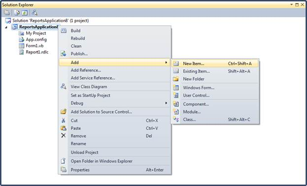
Figure 18: Add option in Solution Explorer
3. Select Add, and then click New Item. The Add New Item dialog will open.
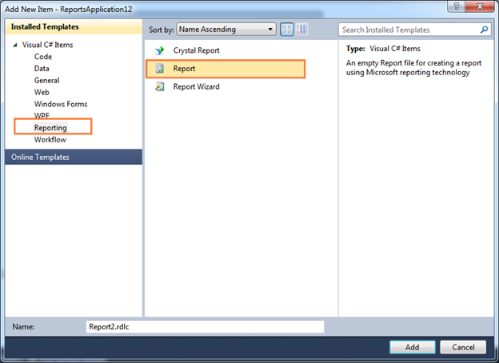
Figure 19: Add New Item window
4. To create a dataset for the RDLC report, click Reporting under Visual C# Items.
5. Click Report, and then click Add. The Report Wizard will open.
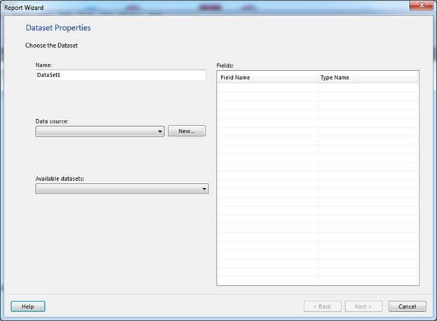
Figure 20: Report Wizard
6. Enter a dataset name in Name field.
7. To choose a data source for the dataset, click New on the right of Data source drop-down combo box. The Data Source Configuration Wizard will open.
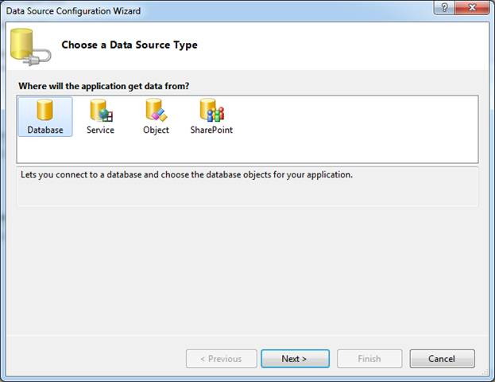
Figure 21: Choose a Data Source Type
8. Click Database under Where will the application get data from? field, and then click Next.
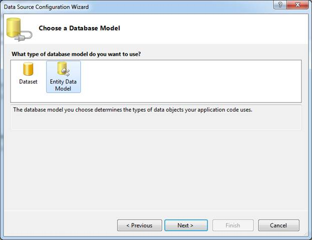
Figure 22: Choose a Database Model
9. Click Entity Data Model under What type of database model do you want to use? field.
10. Click Next. The Entity Data Model Wizard will open.
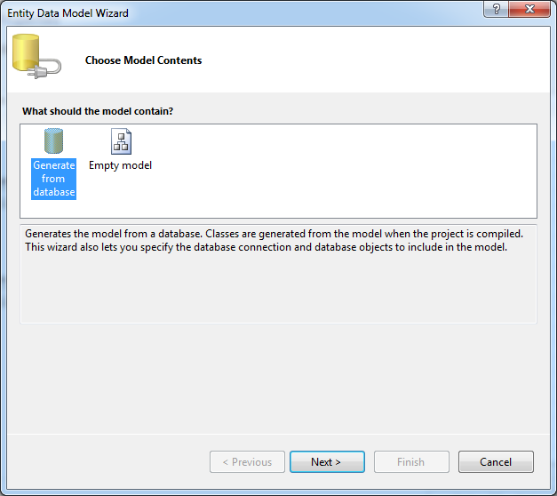
Figure 23: Choose Model Contents
11. Click Generate from database under what should the model contain? field.
12. Click Next.
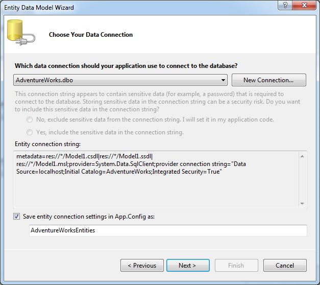
Figure 24: Choose Your Data Connection
13. Select a data connection from Which data connection should your application use to connect to the database? drop-down combo box.
Note: You can create a new data connection by
clicking New Connection.
14. Click Next.
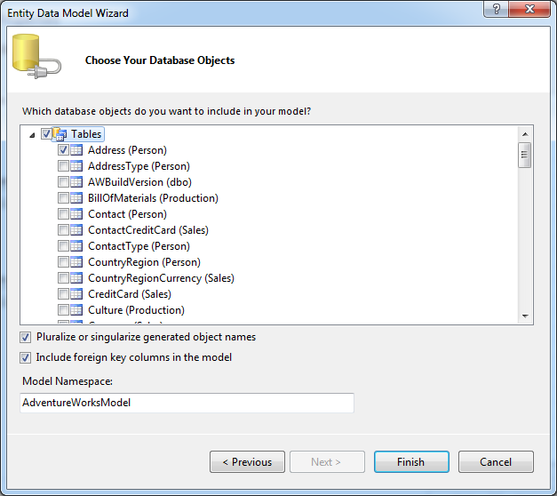
Figure 25: Choose Your Database Objects
15. Select the required object and click Next. The Data Source Configuration Wizard will open.
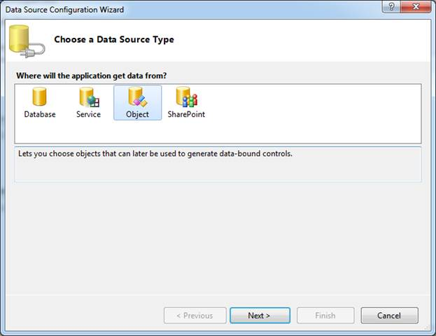
Figure 26: Choose a Data Source Type
16. Select Object under Where will the application get data from? field.
17. Click Next.
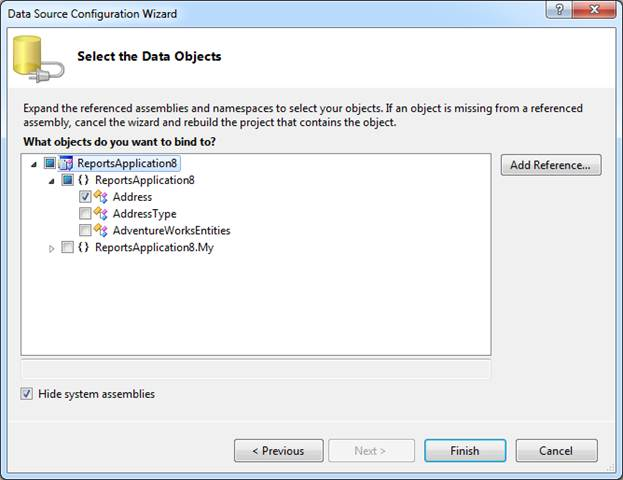
Figure 27:Select the Data objects
18. Select the object under What objects do you want to bind to? field.
19. Click Finish. The Report Wizard will show the details of the dataset under Fields.
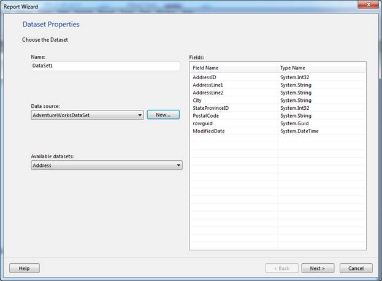
Figure 28: Report Wizard with added fields
20. Click Next.
Note: The fields will be added under the dataset
in Data Sources window.
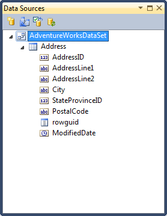
Figure 29: Data Sources with added fields
21. On Toolbox window, in Report Items, select Table.
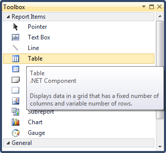
Figure 30: Table option in Toolbox
22. Draw a table on the WPF Designer window.
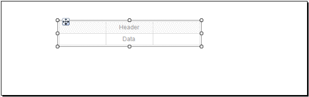
Figure 31: WPF Designer window with table
23. Drag the dataset field on the Table.
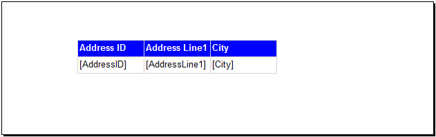
Figure 32: Table with dataset fields
24. To add Report Viewer in WPF application, select ReportViewer under Reporting.
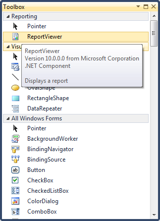
Figure 33: ReportViewer option in Toolbox
Note: The following window will be shown in the
WPF Designer window.
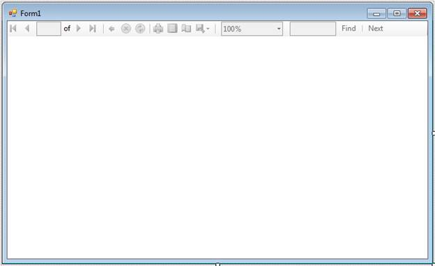
Figure 34: WPF Designer window with Report Viewer
25. Set the ReportPath and the ProcessingMode as local in Report Viewer.
|
<Window x:Class="WpfApplication15.MainWindow" xmlns="http://schemas.microsoft.com/winfx/2006/xaml/presentation" xmlns:x="http://schemas.microsoft.com/winfx/2006/xaml" Title="MainWindow" Height="350" Width="525" xmlns:syncfusion="http://schemas.syncfusion.com/wpf"> <Grid > <syncfusion:ReportViewer Name="reportViewer1" ProcessingMode="Local" ReportPath="..\..\SampleReport.rdlc" /> </Grid> </Window> |
26. Set the DataSource information in the code to view the report in Report Viewer.
|
public MainWindow() { InitializeComponent(); this.Loaded += new RoutedEventHandler(MainWindow_Loaded); }
void MainWindow_Loaded(object sender, RoutedEventArgs e) { this.reportViewer1.DataSources.Clear(); this.reportViewer1.DataSources.Add(new Syncfusion.Windows.Reports.ReportDataSource() { Name = "DataSet1", Value = new AdventureWorksEntities().Addresses.Take(100) }); this.reportViewer1.RefreshReport(); } |
27. Run the application. The following output will be displayed.
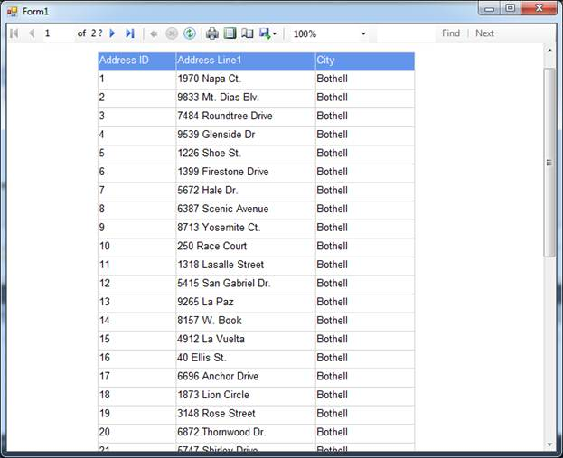
Figure 35: Report Viewer with RDLC reports